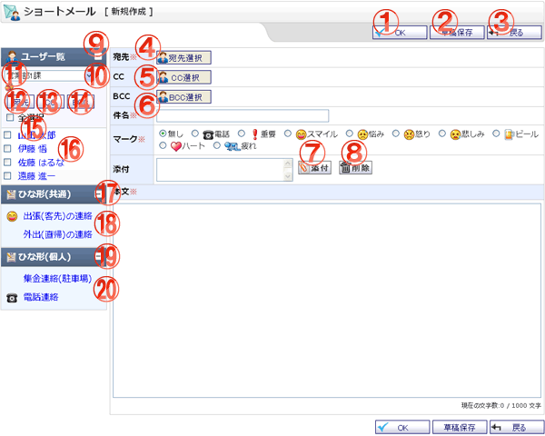

ショートメールを作成する画面です。

機能説明
OKボタンショートメール 新規作成確認画面へ遷移します。入力内容に不備がある場合エラーメッセージが表示されます。 |
草稿保存ボタンショートメールを草稿として登録し、登録完了画面へ遷移します。入力内容に不備がある場合エラーメッセージが表示されます。 |
|---|---|
戻るボタン遷移元の画面へ遷移します。 |
宛先選択ボタン宛先選択画面に遷移します。 |
CC選択ボタンCCの宛先選択画面に遷移します。 |
BCC選択ボタンBCCの宛先設定画面へ遷移します。 |
削除ボタン添付のリストで選択中の添付ファイルを削除します。 |
添付ボタン添付ファイル選択画面をポップアップで表示します。ファイルを選択し、確定すると添付のリストに選択したファイル名が追加されます。 |
ユーザ一覧切り替えクリックするとユーザ一覧が表示されます。 |
グループコンボ選択したグループが下にリスト表示されます。 |
グループボタンポップアップでグループ選択画面が開きます。 |
全選択チェックボックスチェックをつけると、全てのユーザのチェックボックスにチェックが付きます。チェックを外すと、全てのユーザのチェックボックスのチェックが外れます。 |
宛先ボタンチェックボックスで選択したユーザを宛先に設定し、作成画面に反映します。 |
CCボタンチェックボックスで選択したユーザをCCに設定し、作成画面に反映します。 |
BCCボタンチェックボックスで選択したユーザをBCCに設定し、作成画面に反映します。 |
ユーザリンク選択したユーザを宛先に設定し、作成画面に反映します。 |
ひな形(共通)一覧切り替えクリックするとひな形(共通)一覧が表示されます。 |
ひな形リンク選択したひな形を作成画面に反映します。 |
ひな形(個人)一覧切り替えクリックするとひな形(個人)一覧が表示されます。 |
ひな形リンク選択したひな形を作成画面に反映します。 |
表示・入力項目説明
宛先・CC・BCC
宛先・CC・BCC選択画面で選択したユーザ名が表示されます。
件名
件名を入力します（50文字以内）。
マーク
マークを選択します。
本文
本文を入力します（1,000文字以内）。
添付
添付するファイルを選択します。